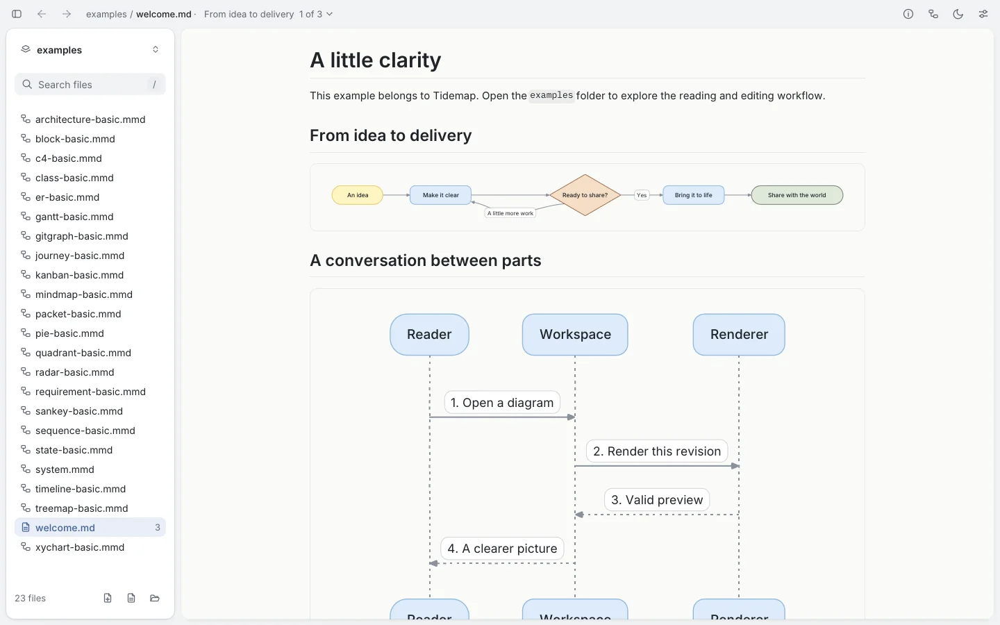
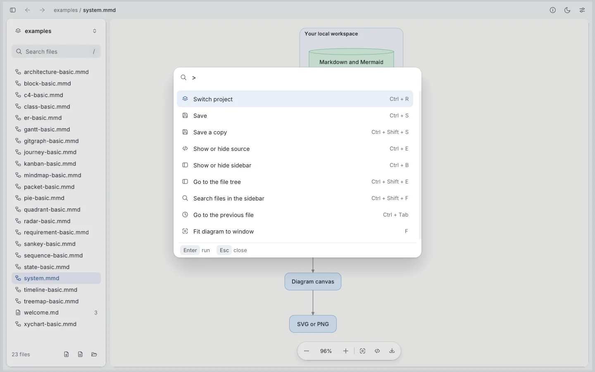
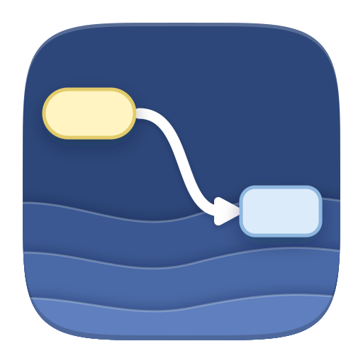

Read and edit the Mermaid diagrams in your Markdown.
Tidemap opens a folder of Markdown and .mmd files and draws every Mermaid diagram with its own Rust engine. No browser, no Electron, no network. One small app for Windows, macOS and Linux.
Version 0.4.0 for Windows, macOS and Linux. Runs without installing.

Big diagrams stay quick.
Measured on generated diagrams of 10,000 nodes, from source text to a scene ready to paint.
23ms
for a 10,000-node chain or tree. Denser graphs take longer, and the bars show how much.
Parse, layout and scene build together. Best of 5 runs, release build, Intel Core i7-14700K (20 cores; layout runs on several threads). The engine only: window start-up and painting are not counted. Reproduce with cargo native bench; smaller sizes are in the guide.
Your README, as a page.
Markdown files open rendered, with every Mermaid block drawn where it sits in the text.
- Everything a README holds
- Headings, lists, tables, quotes, code, links and selectable text.
- Many diagrams in one file
- The file tree shows how many diagrams each Markdown file holds. [ and ] step through them.
- Page or canvas
- Double-click a diagram to open it on the canvas. Ctrl Shift M switches back.

Edit the source. Keep the picture.
Open the source beside the canvas and the diagram follows every keystroke.
- Live preview
- The picture updates as you type. A syntax error leaves the last good picture on screen, so the canvas never goes blank.
- Node to line, line to node
- Click a node to light up its neighbours and jump to its source line, or click a line to find its node.
- Big files stay light
- Only visible lines are laid out, so typing in a 400,000-line file costs what it costs in a 10-line one.
- A real editor
- Undo and redo, word and line selection, multi-line indent, line move and delete, list continuation, find with next and previous.
- Find inside diagrams
- Ctrl F searches the labels of the open diagram, or the whole page for a Markdown file.
- Export
- SVG, or PNG at 1x to 3x, in the light or dark appearance you are looking at.
22 diagram families. One engine.
Each picture is an SVG exported by Tidemap from its examples folder. Open one to see it larger, with its source.
-
Flowchart
flowchartflowchart TB subgraph Workspace[Your local workspace] Files[(Markdown and Mermaid)] --> Index[Project index] Index --> Search[Find a diagram] Search --> Editor[Source editor] end Editor --> Helper[Isolated renderer] Helper --> Preview[Diagram canvas] Editor --> Recovery[(Local recovery)] Preview --> Export[SVG or PNG] -
Sequence
sequenceDiagramsequenceDiagram autonumber participant U as User participant W as Web App actor DB as Database U->>+W: Open dashboard W->>+DB: SELECT widgets DB-->>-W: rows W-->>-U: Rendered page loop Every minute W->>W: refresh cache end alt cache hit W-)U: push update else miss W-xDB: timeout end Note right of U: User sees data Note over W,DB: Shared note -
Class
classDiagramclassDiagram class Animal { <<abstract>> +String name +int age +eat() void +sleep() void } class Dog { +bark() void } class Cat Animal <|-- Dog Animal <|-- Cat class Owner { +String name } Owner "1" --> "*" Dog : owns Dog *-- Tail Dog o-- Collar : wears Cat ..> Food : eats Cat ..|> Pet -
State
stateDiagram-v2stateDiagram-v2 direction LR [*] --> Idle Idle --> Active : start state Active { [*] --> Running Running --> Paused : pause Paused --> Running : resume Running --> [*] } state check <<choice>> Active --> check check --> Done : ok check --> Idle : retry state fork_state <<fork>> Done --> fork_state fork_state --> Log fork_state --> Notify note right of Done : All finished Done --> [*] -
Entity relationship
erDiagramerDiagram CUSTOMER ||--o{ ORDER : places ORDER ||--|{ LINE_ITEM : contains PRODUCT ||--o{ LINE_ITEM : "ordered in" CUSTOMER { int id PK string name string email UK } ORDER { int id PK int customer_id FK date placed_at } PRODUCT { int id PK string title float price "in USD" } -
Gantt
ganttgantt title Release plan dateFormat YYYY-MM-DD section Design Research :done, a1, 2024-01-01, 14d Wireframes :active, a2, after a1, 10d section Build Backend :b1, after a2, 30d Frontend :b2, after a2, 25d Launch blocker :crit, b3, after b2, 5d Release :milestone, m1, after b1, 0d -
Pie
piepie showData title Pets adopted "Dogs" : 386 "Cats" : 85 "Rats" : 15 "Birds" : 40 -
Mindmap
mindmapmindmap root((Tidemap)) Diagrams Flowchart Sequence Class Editor Source Find Export SVG PNG -
Timeline
timelinetimeline title History of social media section Early 2002 : LinkedIn 2004 : Facebook : Google section Mobile era 2005 : YouTube 2006 : Twitter : Something with a much longer description -
User journey
journeyjourney title My working day section Go to work Make tea: 5: Me Go upstairs: 3: Me Do work: 1: Me, Cat section Go home Go downstairs: 5: Me Sit down: 4: Me -
Git graph
gitGraphgitGraph commit id: "init" commit branch develop checkout develop commit id: "feature" tag: "v0.1" commit checkout main commit type: HIGHLIGHT merge develop id: "release" branch hotfix commit type: REVERSE checkout main commit -
Quadrant chart
quadrantChartquadrantChart title Reach and engagement of campaigns x-axis Low Reach --> High Reach y-axis Low Engagement --> High Engagement quadrant-1 We should expand quadrant-2 Need to promote quadrant-3 Re-evaluate quadrant-4 May be improved Campaign A: [0.3, 0.6] Campaign B: [0.45, 0.23] Campaign C: [0.57, 0.69] -
XY chart
xychart-betaxychart-beta title "Sales Revenue" x-axis [jan, feb, mar, apr, may, jun] y-axis "Revenue (USD)" 4000 --> 11000 bar [5000, 6000, 7500, 8200, 9500, 10500] line [5000, 6000, 7500, 8200, 9500, 10500] -
Sankey
sankey-betasankey-beta Coal,Electricity,40 Gas,Electricity,30 Solar,Electricity,20 Electricity,Homes,45 Electricity,Industry,35 Electricity,Losses,10 Gas,Heating,25 Heating,Homes,25 -
C4
C4ContextC4Context title System Context diagram for Internet Banking System Person(customer, "Personal Banking Customer", "A customer of the bank") Enterprise_Boundary(b0, "Bank") { System(banking, "Internet Banking System", "Lets customers view their accounts") SystemDb(db, "Mainframe", "Stores core data") } System_Ext(email, "E-mail System", "Sends e-mails") Rel(customer, banking, "Uses", "HTTPS") Rel(banking, db, "Reads from") Rel(banking, email, "Sends e-mails using") -
Architecture
architecture-betaarchitecture-beta group api(cloud)[API] service db(database)[Database] in api service disk1(disk)[Storage] in api service server(server)[Server] in api service gateway(internet)[Gateway] db:L -- R:server disk1:T -- B:server gateway:R --> L:server -
Block
block-betablock-beta columns 3 a["Frontend"] b:2 c(("Cache")) space d{"Decide"} a --> c b --> d -
Requirement
requirementDiagramrequirementDiagram requirement test_req { id: 1 text: the test text. risk: high verifymethod: test } functionalRequirement login_req { id: 1.1 text: users can log in risk: medium verifymethod: demonstration } element test_entity { type: simulation } test_entity - satisfies -> test_req test_req - contains -> login_req -
Packet
packet-betapacket-beta title TCP Packet 0-15: "Source Port" 16-31: "Destination Port" 32-63: "Sequence Number" 64-95: "Acknowledgment Number" 96-99: "Offset" 100-105: "Reserved" 106-111: "Flags" 112-127: "Window" -
Kanban
kanbankanban todo[Todo] t1[Create documentation] t2[Create blog about the new diagram types] doing[In progress] t3[Render all diagram types natively] done[Done] t4[Ship 0.3.0] -
Radar
radar-betaradar-beta title Grades axis m["Math"], s["Science"], e["English"], h["History"], a["Art"] curve a["Alice"]{85, 90, 80, 70, 60} curve b["Bob"]{70, 75, 85, 90, 95} max 100 -
Treemap
treemap-betatreemap-beta "Products" "Hardware" "Laptops": 40 "Phones": 30 "Software": 35 "Services" "Support": 20 "Consulting": 25
Not drawn yet: zenuml, venn, ishikawa and any other keyword show a "not supported" card, and the source stays editable. %%{init}%% themes are ignored and layouts differ from Mermaid.js; there is no JavaScript fallback. The syntax notes list what each family reads.
Keyboard first.
Every command has a shortcut or a row in the palette. Single keys act on the canvas whenever you are not typing.
| Find a file or diagram | Ctrl P |
|---|---|
| Run any command | Ctrl Shift P |
| Show or hide source | Ctrl E |
| Previous or next diagram | [ ] |
| Fit the diagram | F |
| Page or diagram | Ctrl Shift M |
| Export | Ctrl Shift X |
| Every shortcut | Ctrl / |

Your files stay on your disk.
Tidemap reads and writes the files you open. That is all it touches.
- No network code
- The app has no HTTP client. Remote images in Markdown are not fetched.
- Saves that check first
- Every save is atomic. If the file changed on disk since you opened it, Tidemap stops and offers to compare, reload or save a copy.
- Crash recovery
- Unsaved edits are journalled on your machine and offered back after a crash.
- Autosave, if you want it
- Turn it on in Settings and Tidemap saves after a pause. Conflicts always ask first.
- Nothing to install
- One executable in an archive. No installer, no account, no background service.
- Your colours
- The palette and the geometry live in
style.jsonand reload while the app runs.

Download Tidemap 0.4.0
Released 20 November 2026. Release notes
-
Download .zip
Windows Your system
Unzip and run
Tidemap.exe. -
Download .tar.gz
macOS, Apple silicon Your system
Extract and run
tidemap. The app is not signed yet: the first time, right-click it and choose Open. -
Download .tar.gz
macOS, Intel Your system
Extract and run
tidemap. Not signed yet: right-click, Open, the first time. -
Download .tar.gz
Linux Your system
Extract and run
tidemap. File dialogs need GTK 3; a.desktopfile and an icon are included.
Every archive has a .sha256 file beside it on the release page. The guide shows how to check it and how to build from source.